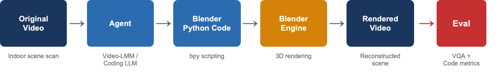
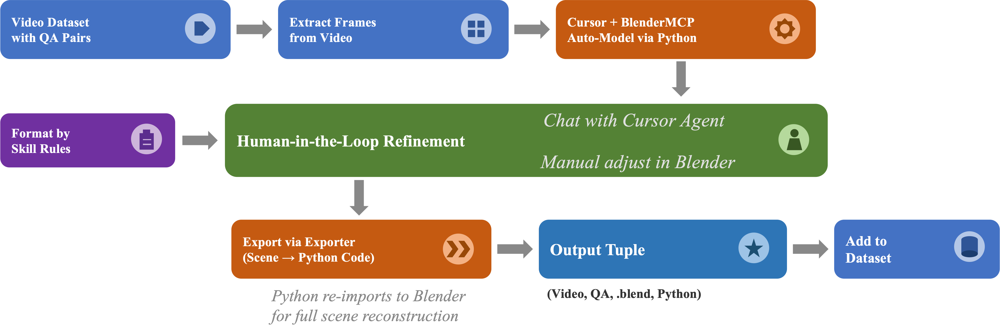
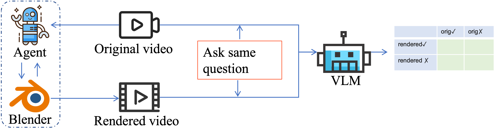

BVB (Blender-VideoBench) evaluates fine-grained video understanding through programmatic reconstruction. Instead of relying solely on QA accuracy — a necessary but insufficient measure of understanding — BVB asks an agent to generate Blender Python code that reconstructs the 3D scene depicted in a video. Because code is precise, structured, executable, and verifiable, a successful reconstruction provides a computational proof of understanding.

Existing video LLMs are typically evaluated on multiple choice or open-ended QA. But QA accuracy can mask shallow understanding: a model might pick the right answer for the wrong reason, or memorize dataset biases. BVB takes a different view of evaluation.
If an agent writes Blender Python that, when executed, produces a scene matching the original video on the relevant geometric and spatial properties, that is much stronger evidence of understanding than picking option (C) on a multiple choice question.
Blender is a universal 3D playground covering modeling, animation, rendering, and simulation, with a full Python API and a permissive open-source license. Its high learning curve for humans is precisely what makes agent mastery of it valuable.
Source videos come from VSI-Bench — real indoor 3D scenes from ArkitScenes, ScanNet, and ScanNet++ with spatial-reasoning QA pairs. Each finished BVB data point is a tuple of:
.blend scene
No external asset libraries. PolyHaven, Sketchfab, and similar are disallowed for benchmark agents — all geometry must be constructed from scratch, so the benchmark measures genuine scene understanding rather than asset-retrieval skill.
PME applies parallel edits to the video (via video-to-video editing / inpainting) and to the Blender scene (via keyframe animation), producing event-aligned pairs that test dynamic and temporal understanding without cross-modal generation artifacts.
Final numbers will be released with the paper. The figures below are stand-ins for the final task-distribution and source-dataset breakdowns.
The vision-level evaluation runs the same question through a frozen VLM on both the original and the agent-reconstructed video, then crosses the two outcomes into a 2×2 contingency table from which retention and hallucination rates are computed.

| Level | Metric | What it measures |
|---|---|---|
| Vision | Retention rate#(orig ✓ ∧ rendered ✓) / #(orig ✓) | How much correct info the reconstruction preserves. |
| Vision | Hallucination rate#(orig × ∧ rendered ✓) / #(orig ×) | How much incorrect info the reconstruction introduces. |
| Vision | Δ accuracy | Difference between QA accuracy on original vs. rendered video. |
| Code | Semantic edit distance | LLM-judged structural difference between GT and agent code. |
| Code | Executability | Code that fails to run scores 0 — a natural sanity check. |
Baseline numbers and a public submission process will be released with the paper. Entries below are placeholders showing the schema.
| Method | Retention↑ | Hallucination↓ | Δ Acc. | Sem. Edit Dist.↓ | Exec. %↑ |
|---|---|---|---|---|---|
| Human (refined) | — | — | — | — | — |
| BlenderMCP | — | — | — | — | — |
| VIGA | — | — | — | — | — |
| Your method here | — | — | — | — | — |
Submission instructions and the evaluation server will be linked here on release.
Active development. About 450 VSI-Bench scenes are currently tracked, with Blender reconstructions in progress. The dataset, evaluation framework, and baseline numbers (BlenderMCP, VIGA) are targeted for release alongside the BVB paper.